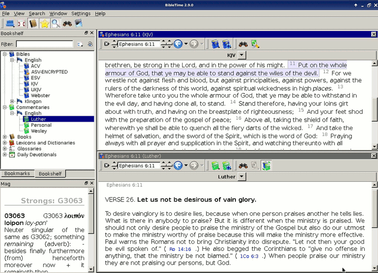

Зміст
Ось як виглядає типовий сеанс BibleTime :
|  |
Ви можете легко побачити різні частини застосунку. Верхнє ліве вікно використовується для відкриття встановлених робіт на вкладці Книжкова полиця, а за допомогою вкладки Закладки ви можете керувати своїми закладками. Маленьке віконце "Mag" під Книжковою полицею використовується для показу додаткової інформації, яка вбудована у документи. Наприклад, коли ви наводите вказівник миші на маркер виноски, журнал показує фактичний вміст виноски. Панель знарядь дає вам швидкий доступ до важливих функцій, а стіл з правого боку — це місце, де ви робите свою справжню роботу.
Давайте тепер перейдемо до розгляду різних частин застосунку окремо.